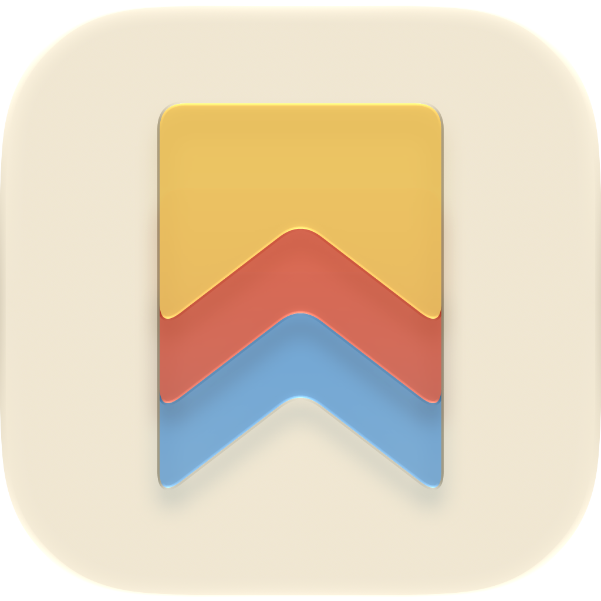
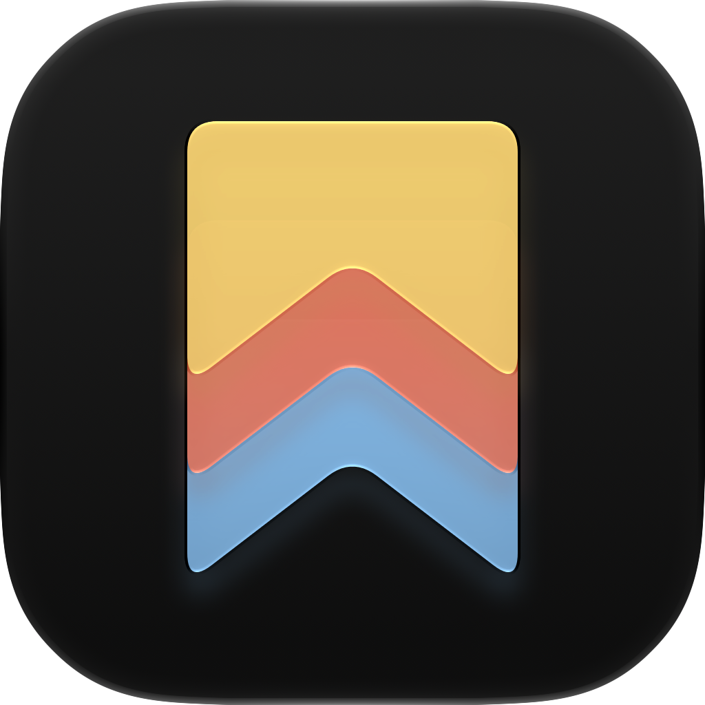
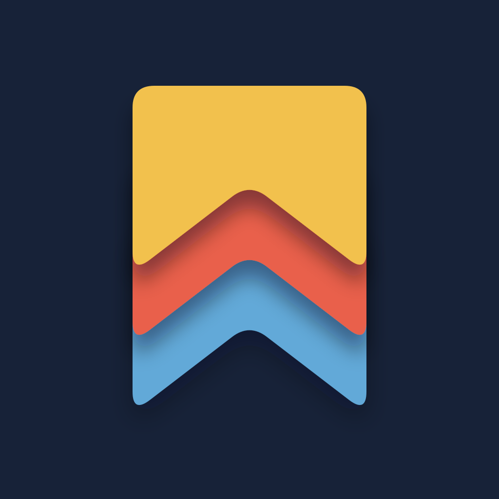
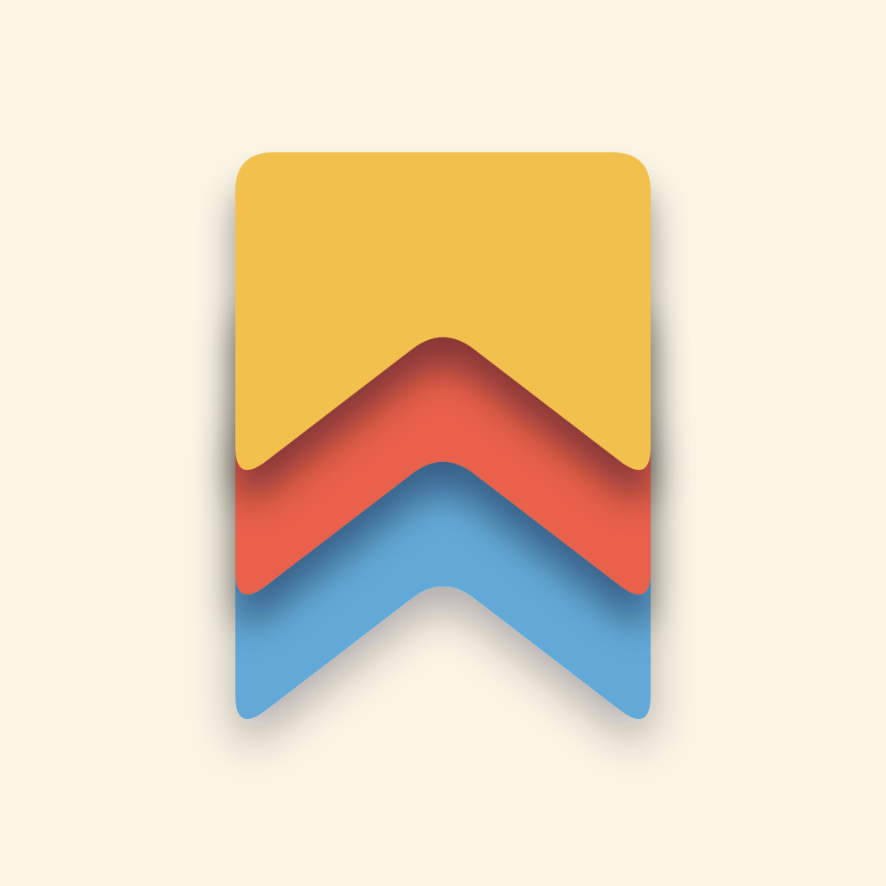
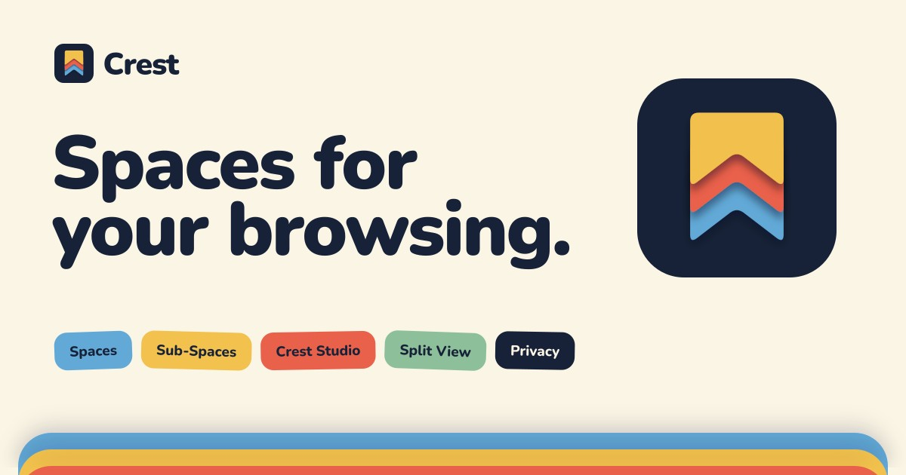
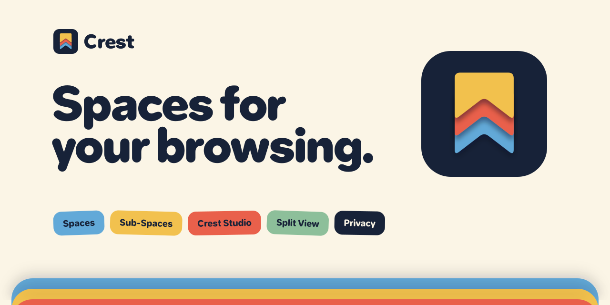

Press kit.
The Crest mark, app icon, profile pictures, banners and colors, for writing about Crest or showing it on another site.
Download everythingLogo


App icon




Profile pictures






Banners and headers


Colors and type
- Crest blue
#2B6CC4Buttons, links and selection - Ink
#172238Text and the mark’s tile - Slate
#2B3A5CDark sections - Cream
#FBF5E6Pages - Paper
#FFFDF7Cards - Sky
#62A9D8Back banner - Butter
#F2C14EFront banner - Coral
#E9604BMiddle banner - Sage
#8DBF9AQuiet sections - Gold
#8A6A22Labels
AaAllo HeavyHeadlines, buttons and labels, at its roundest.
AaSF ProBody text. On the web, Allo.
Using the mark
- Keep it whole. Butter in front, coral in the middle, sky at the back, on the navy tile.
- Give it room. Leave about a seventh of the tile clear on every side.
- Use the small mark below 32 px. It drops the shadows and adds a navy outline.
- Don’t stretch it, recolor it, reorder the banners or add gloss.
Social cards

Link preview
1200 × 630 · the og:image and twitter:image of every page

GitHub social preview
1280 × 640